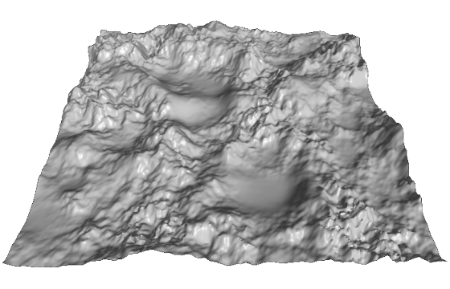
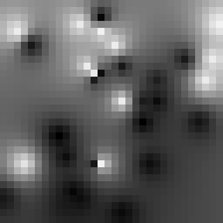

|
The latest spy gadget is an earring that has a 2 terapixel camera, a 16 core compound graphics processing and CPU unit, 4 TB of overclocked 512-bit GDDRX RAM, and an user-expandable mass storage interface. It can take and transmit photos of the finest quality, whenever your ear itches; and the massive heatsink lends a very fashionable look to the user. Because of certain legal issues (regarding dubious medical concerns about high-energy electromagnetic radiation near the user's brain), the bandwidth that the earring may utilize during wireless image transmission is extremely small. Until these obsolete regulations are removed, the WSA has to compress the images very severely. They came up with a creative lossy compression format that will keep major features reconstructible, and loses only some unimportant details. |

http://commons.wikimedia.org/wiki/File:Heightmap_rendered.png |
The decompressor is already available; your task is to write the compressor. The WSA is looking for an implementation that provides the best image output while staying inside the strict size requirements.
Given a grayscale input png (saved directly from the Intelligent/Imaging Serial CCD), you need to find a suitable compression. The compressed image is described only by a couple of reference points. Each reference point is a pair of coordinates and an intensity. The original image is reproduced by determining the intensity of the missing pixels between reference points using the value of all reference points. The exact method for any given pixel on the output is:
Multiple reference points can not be placed on the same coordinates, all reference points must be within the boundaries of the image.
The maximum number of reference points used to store an image is the sum of SX and SY, the horizontal and vertical dimesions of the image in pixels.
The top-left pixel of the image is X=0;Y=0.
Scoring is based on the root mean squared error (RMSE):
Valid submissions are rendered to a grayscale image. The render and the input image are compared. The intensity difference of each pixel is squared, then the average of the resulting values is calculated. The square root of the average is the RMSE. This is then compared to the best submission so far. (The eval score in the submission system is trunc(1000000*RMSE)):
SCORE = 100*(1 - sqrt(1 - BEST/RMSE))
Example input | Example output
| Example output
|